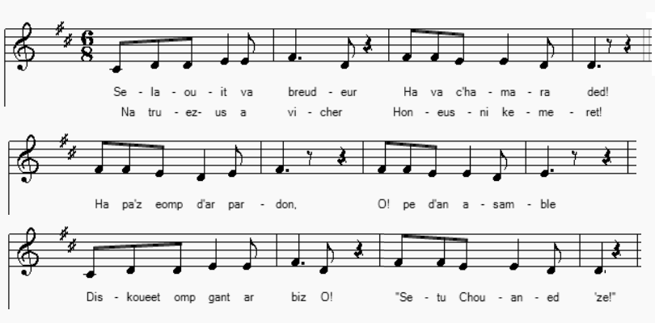
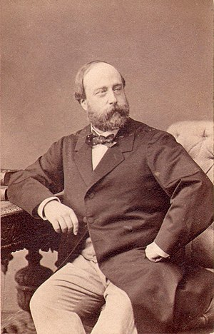

Ar Chouaned diwezhañ
Les derniers Chouans
The last Chouans
Texte recueilli par l'Abbé François Cadic
Publié dans "La Paroisse Bretonne" en février-mars 1918.
Mélodie
"Complainte des Chouans"
chantée par M. Mathurin Le Moing à Noyal-Pontivy et son fils, l'abbé Le Moing à Pluvigner,
Mélodie publiée par l'abbé François Cadic dans "La Paroisse Bretonne", mars 1923
Arrangement Christian Souchon (c) 2019
|
BREZHONEG (Stumm KLT) 1. O selaouit va breudeur ha va c'hamaraded! Na truezus a vicher hon-eus-ni kemeret! Ha paz eomp d'ar pardon, O pe d'an asamble Diskouezet omp gant ar biz: "Sell, Chouaned aze!" 2. Ha paz eomp d'an davarn gant hor c'hamaraded Diskouezet omp gant ar biz: "Sell, aze Chouaned!" Ha paz eomp da vale e-mesk hor c'honsorted Diskouezet omp gant ar biz: "Sell, aze Chouaned!" 3. Mar hon-eus-ni ar maleur da respont gant rezon: N'o-deus da damall deomp netra 'med hor prizon! N'eo ket c'hwi, tudjentil, naren nag ho prizon A rayo deomp-ni cheñchiñ, leuskel hon opinion. 4. Rak me glev ur vouezh dous, ur vouezh dous o laret: "Dalc'homp, O dalc'homp fidel, Fidel dalc'homp bepret! O feiz-ta, va breudeur, ' dra sur ni a zalc'ho, Ni a varvo mil gwech O! kentoc'h evit mankout!" [1] Transcrit par Christian Souchon |
FRANCAIS 1. Camarades mes frères. Quel bien triste métier Avons-nous bien pu faire dans un proche passé! Partout où l'on s'assemble, il se trouve des gens Qui du doigt nous désignent: "Voyez, ce sont des Chouans!" 2. Ou quand à la taverne, l'on rejoint ses amis, Des doigts vers nous se pointent: "Là-bas, des Chouans assis!" Et si jamais en groupe, on arpente les rues A nos oreilles sonne "Des Chouans!", chanson connue! 3. Si par malheur on ose dérouler nos raisons, Alors on nous assène: "Vous étiez en prison!" - Ce que n'a pu la geôle, en vain votre mépris Le tente: à coeur fidèle faire changer d'avis. 4. J'entends à mon oreille chuchoter une voix: "Avec persévérance, continuons le combat! De défendre la cause, amis, jurons encor: Honte à ceux qui renoncent! Plutôt cent fois la mort! " [1] Traduction Christian Souchon (c) 2021 |
ENGLISH 1. My comrades and my brothers. Was it so bad a job That we all once attempted, which is banned by the mob? Wherever people gather, as soon as we go past They point to us and mutter: "Chouans! I beg the last!" 2. Whenever at the tavern, we meet our friends of old Fingers to us are pointing: "Chouans, look and behold!" If ever a group of us happen to walk the streets, Somebody will say " Chouans there!" and everyone repeats. 3. Now should we dare to answer and appeal to reason, The argument they proffer is "You were in prison!" - What the jail could not achieve, they shall attempt in vain: To cause our faithful hearts to give up hope and restrain. 4. Because I hear a voice always whispering in my ear: "Cheer up, the fight must go on! Be patient, without fear! Friends, the right cause to defend, let's promise loud and high: I, rather than to give up, a thousand times would die " [1] Translated by Christian Souchon (c) 2021 |
NOTES:
|
[1] L'abbé Cadic pense, sans doute avec raison que, si cette chanson fut composée lorsque les Chouans durent déposer les armes, elle trouva un nouveau regain de popularité sous Louis-Philippe, quand les réfractaires se lancèrent dans une folle tentative de guerilla qui ressemblait fort à du brigandage. Ils n'avaient plus pour résister au découragement que le bien faible espoir en l'avènement du prétendant légitimiste, le comte de Chambord, petit fils de Charles X. Celui qui se faisait appeler Henri V avait organisé sa cour au château de Frohsdorf en Autriche dont il avait hérité en 1851. C'est là qu'il mourut en 1883 à l'âge de 63 ans. L'abbé Cadic poursuit: "Légitimistes impénitents, [ces derniers Chouans] se rendirent compte cependant du discrédit que leur avait valu leurs excès dans l'opinion des gens. Ils étaient devenus l'objet de la risée, quand ce n'était pas de la haine du public et il suffisait qu'ils parussent dans une réunion quelconque pour qu'on les montrât du doigt, en accablant de quolibets et de mauvaises plaisanteries [...] ces Don Quichotte de la légitimité... La foule n'est guère disposée à donner son suffrage aux causes perdues, ni à ménager les vaincus. .. Aujourd'hui la complainte des Chouans est oubliée" (écrit en 1923). Plusieurs chansons furent composées sous l'Empire avec un caractère nettement anti-Chouan. François Cadic pense que la présente chanson en dialecte de Vannes a dû voir le jour précisément dans "cette bastille irréductible de la légitimité que formaient les cantons de Pontivy, de Baud et de Locminé..." |
 Le comte de Chambord |
[1] Father Cadic assumes, no doubt rightly, that, if this song was composed when the Chouans had to lay down their arms, it had a new resurgence in popularity under Louis-Philippe, when the draft dodgers launched into a mad attempt at guerilla very near akin to brigandage. They had no more to resist discouragement than the very weak hope in the advent of the legitimist Pretender, the count of Chambord, grandson of King Charles X. The Count who dubbed himself "Henri V" had organized his court at Frohsdorf castle in Austria which he had inherited in 1851. It was there that he died in 1883 at the age of 63. Father Cadic continues: "These unrepentant Legitimists, [the "last Chouans"] realized, however, the discredit that their excesses had earned them in the public opinion. They had become the object of ridicule, when it was not contempt of the public and these Don Quixotes of legitimacy only had to appear in any meeting, to be pointed out, and overwhelmed with gibes and scoffing [...] The mob as a rule is hardly disposed to give their vote to lost causes, or to spare the vanquished ... Today the present "Lament of the Chouans" is forgotten "(written in 1923). Several songs were composed under the Empire with a distinctly anti-Chouan character. François Cadic takes it that the present song in the Vannes dialect must have been composed precisely in "the sanctuary of legitimacy made up of the cantons Pontivy, Baud and Locminé ..." |
Retour à "Izidor Divead"
Table
"Les Chouans selon Villemarqué", un livre au format A4.  Cliquer sur le lien ou sur l'image ci-dessus |